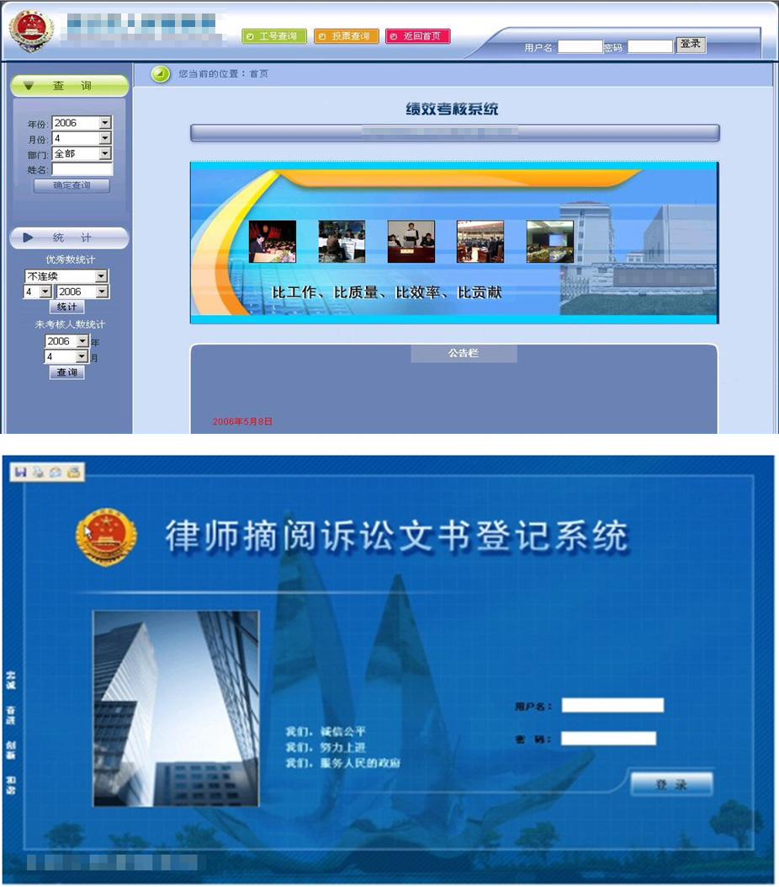

系统概述:
三位一体绩效考核系统三次开发：
绩效管理考评系统是为响应最高人民检察院就检察机关建设提出的“三位一体”的工作要求，定制开发的应用于检察机关的队伍管理软件。从履职、出勤、自我评价及领导评价等多方面，建立详尽完善的考评体系。以信息化、现代化、科学化、制度化为基本宗旨，全面、系统地对检察人员进行有效管理。在解决传统考核方法的固有弊端，检察人员忙闲不均等方面，做出杰出贡献。
扣押冻结款物流转系统：
系统主要针对直接立案侦查的案件中涉及的赃款赃物进行信息化管理。对整个赃款赃物的收缴，处理过程逐一监督，责任到人。领导可查阅任一案件的处理过程，系统可自动识别赃款赃物不匹配的案件，为强化赃款赃物的收缴处置，监督审查奠定坚实的基础。
网上派车系统：
网上派车系统是一款适用于公检法等政府机关的应用软件，该软件将公务用车进行信息化管理，从用车申请到领导审批，派车，驾驶员评价逐一记录。并在派车的同时记录车辆行驶里程信息，方便领导进行监督查阅。通过该软件，可以合理的进行公务用车的调配，也规范了公务用车的具体流程。同时，新改版的网上派车系统加入了移动互联网技术及GPS技术。每台警车配有GPS定位器，监控中心可以根据实际情况查询每台外出警车的位置及详细信息。另外每台警车也会配有对应的互联网终端，用于实时接收监控中心发来的指令。
律师摘阅登记系统：
律师摘阅登记系统是一款应用于检察机关，为便于律师和检察机关沟通而搭建的软件平台。律师可通过平台预约借阅案件案卷，检察机关随即指派法警应对，并对案卷的借阅过程详细跟踪，为案件的审理奠定坚实的基础。
交办任务系统：
交办任务系统主要是针对检察院内部领导与干警任务下发及完成情况进行跟踪查询的软件系统。领导根据具体情况选择干警下发相关任务，并规定任务完成时间周期，干警接到任务后查看任务信息，并计划完成任务，任务进行过程中可以通过软件随时进行任务汇报，领导也可以通过软件对任务完成的某个环节进行跟踪查看及进一步点评。任务完成后，领导根据具体情况进行任务完成评价。
检委会网上讨论评阅系统简介：
检委会网上讨论评阅系统是一款专为检察机关检委会成员设计开发的交流平台，用于检委会成员的日常文件讨论与评阅，平台开放性强，检委会成员可自行上传文档，并针对某个文件进行集中讨论评阅。所有信息会最终记录保存并归档，便于信息的管理。
案例图片:
